I spend most of my professional time designing and building data products — analytical applications like data dashboards or data visualization prototypes for understanding algorithms or datasets. A significant but still much smaller amount of my time has been spent developing a charting framework known as Semiotic that is used for the charts in many of these data products.
If you’re just interested in the features available in the new data explorer, just skip to How to use the Data Explorer.
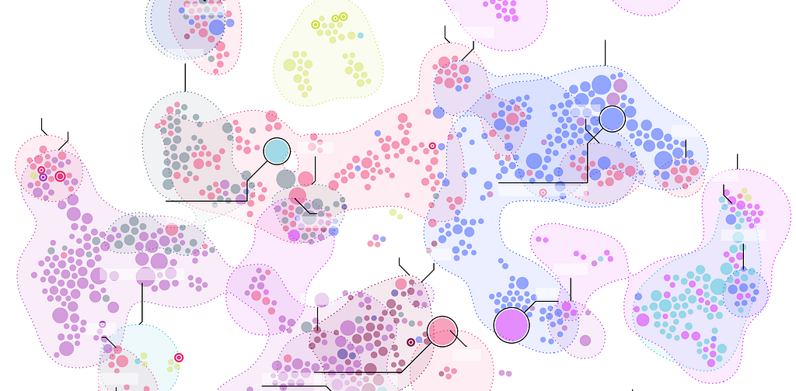
These are two major areas in data visualization: application and tool. In the context of data visualization, tools are the libraries like D3 or the platforms like Tableau that allow you to build data products like a dashboard or a report. There’s a third that I haven’t done much work with until now: automatic data visualization. So, when I was asked to develop a data explorer for the nteract notebooking platform, I was excited to see if I could add anything to this important area of data visualization.
The problem space
Automatic visualization refers to any platform that lets you plug in a table or other structured dataset and cycle through views of it. You could take a table and see it as a bar chart or a pie chart in the hopes that the different views will expose insights into your data.
In a way, all data visualization has an automatic mode when it’s used for exploratory data analysis. Business Intelligence (BI) tools like Tableau let you design dashboards and reports by experimenting with different views. ggplot2 takes expected data structures and responds with friendly charting defaults allowing you to cycle through views relatively easily.
The difference between tools like those and the nteract data explorer is that the data explorer isn’t designed to produce a final report or dashboard. Instead, it simply provides a set of charts to allow you get an overview of the data in your notebook. Notebook users have a variety of methods for creating final data visualization products when they know what they want to present and emphasize, and the data explorer isn’t meant to compete with those approaches.
Data Explorer Goals
- Summarize the data in an appropriate way. This means providing the ability to compare individual rows to each other but also groups of rows. A bar chart, for instance, is a good way to compare a metric across rows, and a scatterplot is a good way to compare correlation between two metrics across rows. But the data explorer should also enable rudimentary methods for grouping and nesting data because this can be important for effective summarization. This allows for summary charts that emphasize distribution and hierarchy.
- Support a variety of views into the data. The prototype data explorer that this version replaced only had simple line chart and bar chart view of the dataframe. That’s fine if you’re only interested in measuring the numerical precision of a metric across rows. However, if your dataframe represented an edge list it would be pretty useless. Similarly, if you wanted to look at a large number of points you’d want a chart that showed the density of correlation between two metrics and not the individual points.
- Package the component for re-use by other query result interfaces. At Netflix, we have an internal SQL query app that returns results that could benefit from the same visualization component.
Data explorer leverages the Tabular Data Resource schema implemented in Pandas. It’s a simple data format that has a few expected properties:
- A list of column names and types (string, number)
- A list of dataframe keys
- Multiple metrics
- Tabular data structure
While it’s not part of the schema, a further expectation is that the data explorer would only need to deal with hundreds of data points and not thousands or more.
How Semiotic fits in well with this
It just so happens I’ve been developing a charting framework that takes a structured view of data models paired with data visualization methods. In contrast to other charting libraries, Semiotic doesn’t have a <BarChart> component or a <PieChart> component but, rather, has three frames that represent shared data visualization approaches tied to different data structures. The Data Explorer uses all three of the Semiotic frames:
<OrdinalFrame> for bar charts, summary charts and parallel coordinates
<XYFrame> for scatterplots, line charts, hexbins
<NetworkFrame> for force-directed networks, sankey diagrams and hierarchical viz
The way Semiotic is designed means it’s pretty trivial to implement a variety of charts to let the user experiment with different ways of expressing the data while they explore. <NetworkFrame>, for instance, doesn’t just display force-directed networks but rather many different topology-orient charts like dendrograms, treemaps, sankey diagrams and circle packing.
How to use the Data Explorer
One sample data set you can work with is from the World Happiness Report. It provides happiness scores and ranks for the countries of the world along with the metrics that were used to derive the happiness scores. There’s a ready to play with notebook available on mybinder (Be patient it can take up to 30 seconds to load). The following is how data explorer deals with this dataset.
To configure your notebook to use the data explorer use the following settings:
import pandas as pd
pd.options.display.html.table_schema = True
When you display a dataframe, you are given a grid of the data in the dataframe:
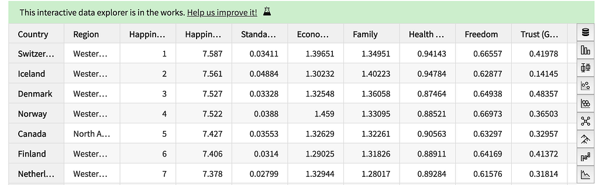
The icons on the right each indicate a different data visualization mode you can use to examine your data.
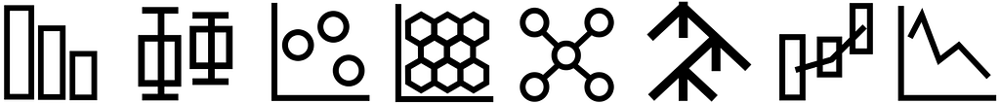
Bar Charts
The first mode allows you to explore your data with a simple bar chart. You can see and interact with the individual rows, though only the top rows will be colored for clarity. Changing the Metric in the dropdown will adjust the order and display of the bar chart.
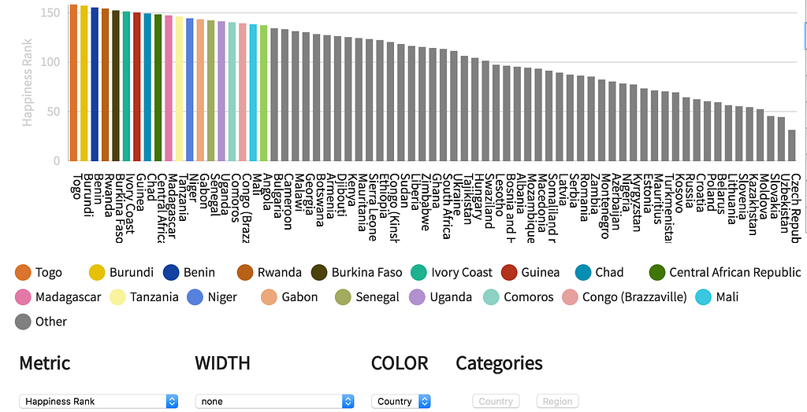
You can also aggregate rows by Categories and encode width with a secondary metric to make Merimekko-like charts. Remember that the aggregation is simply additive — and provides no more functionality than that — so when “Region” is selected, the total of the happiness scores is measured, showing higher values for regions with more countries.
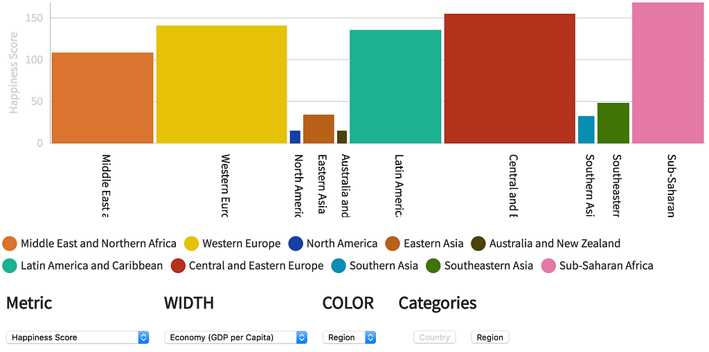
Summary Charts
While aggregation is a feature of the bar chart mode if you’re interested in looking at summary data more carefully, you should use the next data explorer mode — represented by a boxplot icon — which shows summary visualization. The default summary chart is a violin plot with the individual items shown (and available for hover interaction for more details).
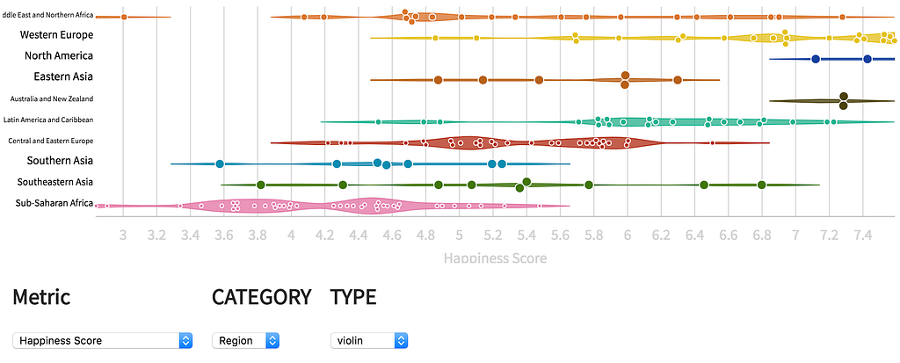
Along with changing the metric and the summary category, you can also test out other summary visualization types: joy plots, boxplots, heatmaps and histograms.
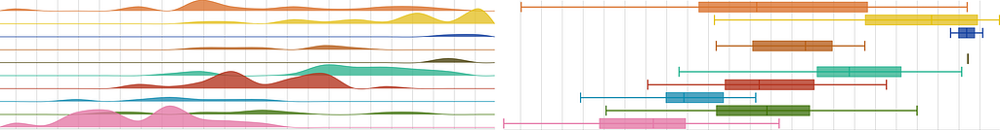
Scatterplots
The third data explorer mode is a simple scatterplot which also includes options for size encoding (if you feel the need to create a graduated symbol plot a la Hans Rosling) as well as some basic annotation of the top value points.
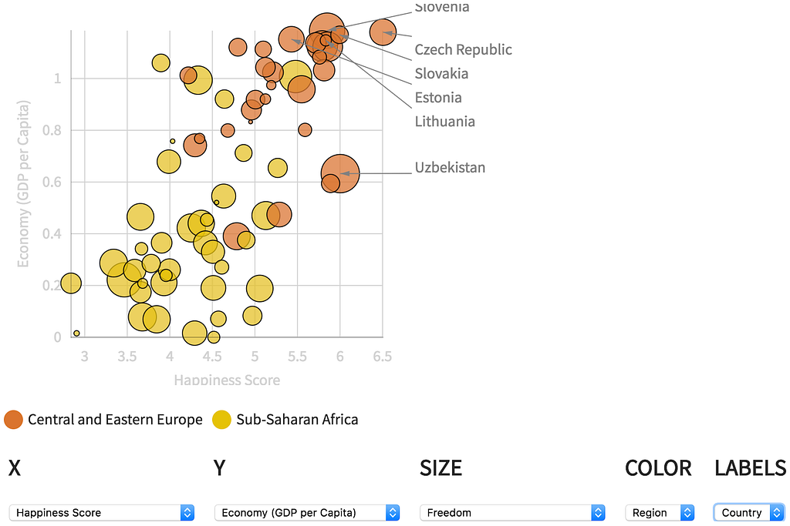
Hexbin
Below the scatterplot is a hexbin icon. Hexbins are useful for exploring density of larger datasets. The hexbin will show you the aggregated points on hover. The legend indicates which hex has the maximum value and what the density of the plot is otherwise as a percent of that maximum value.
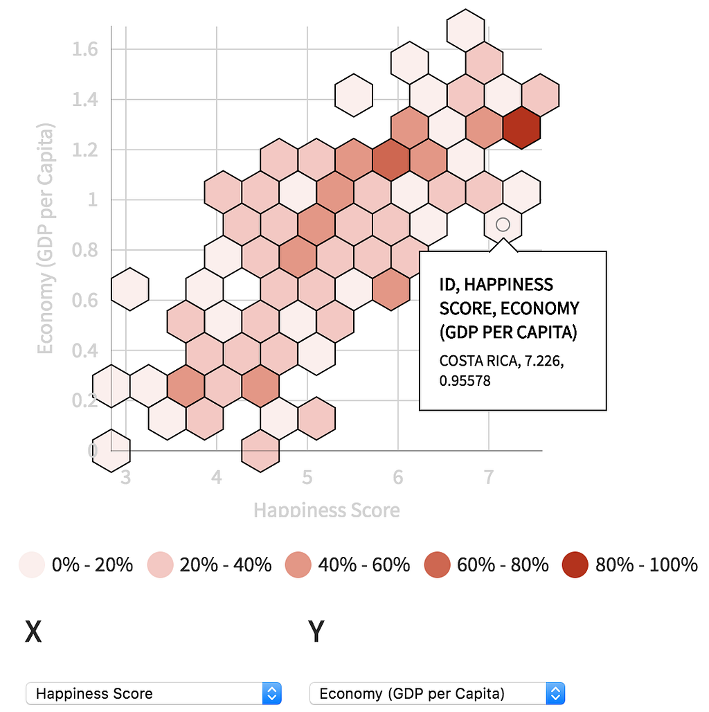
Network Diagrams
Data Explorer has two available network diagrams: A sankey diagram for flow and a force-directed network diagram for traditional SNA-like approaches. Unfortunately, neither of these is well-served by the non-network sample data; however, if you have network data you can use the Value selector to tell Data Explorer which metric you want to show in your flow diagram or edge weight.
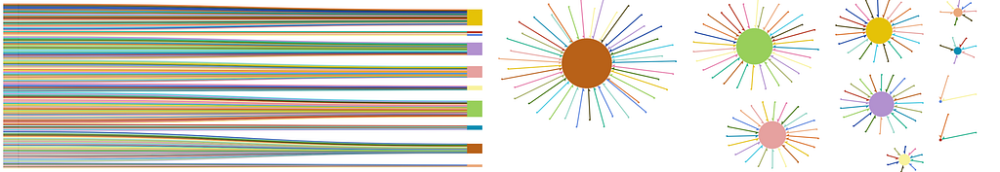
Hierarchical Charts
Below the network visualization is a tree icon allowing you to explore hierarchical patterns. Use the Categories buttons to select how to nest the data. If you are in treemap or partition mode the selected Metric will be used to size the visualization.
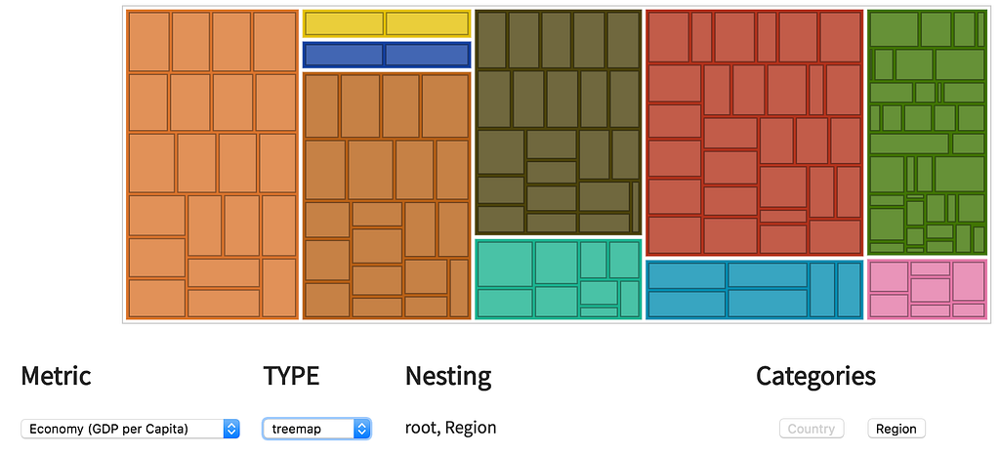
Parallel Coordinates
Data Explorer also has a parallel coordinates view that lets you analyze your data interactively by adjusting the brushes on each column to filter the data to only show the entries that satisfy the selected filters. Brushes can be dragged around, and their tops and bottoms can be adjusted to correspond to a range of each metric to filter the data to. Use the Explore/Filter button to switch between adjusting the brushes or hovering on the individual points.
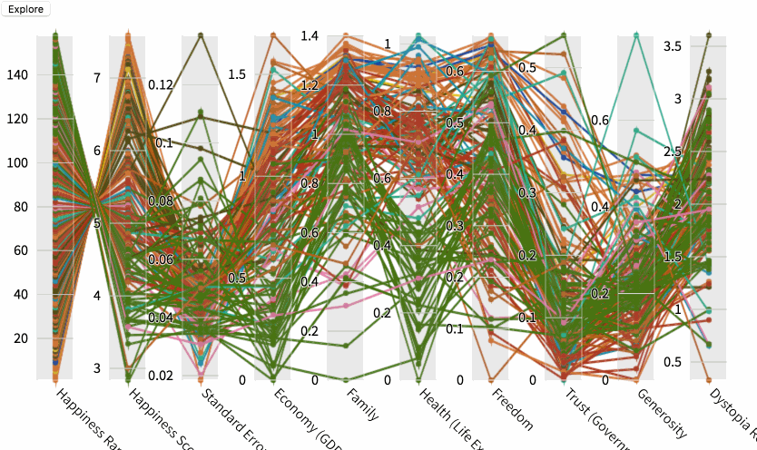
Line Chart
A line chart mode exists in data explorer that allows you to see the mix of metrics and how they appear in percent and aggregate form. In the future, this should be upgraded to a true time series visualization when the data is sent with time series or sequential data.
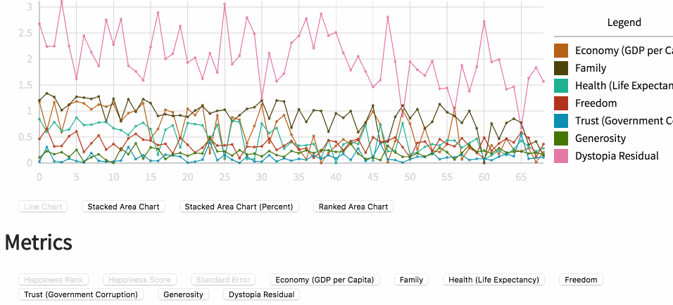
Improvements with an improved data model
Automatic data visualization is limited by several factors, only one of which is the flexibility of the charting technology used. In its current, primitive incarnation, Data Explorer provides many possible views into your data, but it does nothing to suggest which one you should use. This could be improved with a more robust data model:
- Cardinality: By describing the cardinality of certain fields, it would be easier to determine if a string was something like a name (high cardinality) or a category (low cardinality).
- Preprocessing: While any automatic data visualization should deal with the tabular data, it’s a challenge to represent certain types of data using that format. Some way of better storing time series data, summary sketches of data and topological data could be tied to more robust methods for visualizing and exploring that data.
- Features. The simple annotations you see in the scatterplot view are a major feature of Semiotic but annotations are a hard thing to automatically generate. Heuristics to discover data features, whether via anomaly detection or other methods, would allow the data visualization to be richly annotated.
Improvements with an improved data explorer
This is my very first attempt at building some kind of automatic data exploration tool and I’m sure it can be improved. With that in mind, I hope anyone using it in nteract will feel comfortable filing bug reports and feature requests. Even without that input, I can see three areas where there could be valuable enhancements:
- UI Improvements: One of the requirements of developing the data explorer was to use native HTML controls. I hadn’t realized just how reliant I had become on custom UI elements until I tried to implement an attractive, thoughtful UI using just native elements. Along with just looking better, many of the controls could be better designed and have more built-in instruction on what the buttons do. The navigation between the different views, especially, should have a better information hierarchy that reminds users of how different charting methods are related.
- Small Multiples: Among the most useful data visualization techniques for exploration is the use of small multiples — many charts with shared data and/or scales to compare and contrast across dimensions.
- Saved State: The Data Explorer, as I mentioned earlier, isn’t meant to compete with traditional notebook data visualization. But it would still be useful if a view into the data was saved in the cell and not lost on reload.
Conclusion
In my experience, automatic data visualization products suffer from being a list of features without an overarching theme. One thing that I hope data explorer can do, more than provide users with an excess of charts, is to better align data visualization with data exploration.
Designing the nteract Data Explorer was originally published in nteract on Medium, where people are continuing the conversation by highlighting and responding to this story.